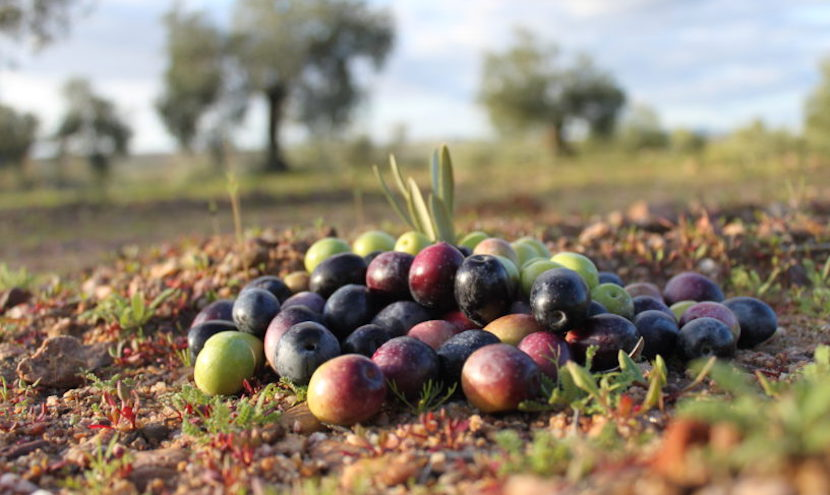

Aceites de oliva de España
publicado por Pepe hace 1 año

Aceitunas en el campo
CATEGORÍA: GeneralSon muchas las provincias españolas que cuentan con buenos olivares destinados a la producción del aceite. Pero sin duda, más del 47% de la producción mundial se centra en Andalucía. Los mejores olivares se reparten por sus diversas comunidades autónomas, siendo Jaén quién produce la mayor cantidad de aceite, seguido de Córdoba. Está considerado como uno de los elementos principales en los bosques mediterráneos, de incalculable valor tanto gracias a la producción de aceite como a su valor ecológico. Volviendo al aceite, el picual es el que lidera más del 50% de la producción.
Seguir leyendo >>